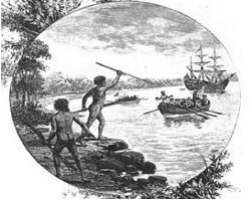

A ocupação de territórios para fins de exploração e colonização sempre fez parte da
História. Sendo assim, a Oceania foi uma das últimas regiões do mundo a ser
oficialmente "descoberta" por cientistas e exploradores, mesmo que a população
nativa seja a mais antiga do mundo. Isso se deve ao etnocentrismo europeu.
Colonização:
O navegador português Fernão Lopes Magalhães foi o primeiro não-nativo a pisar
em terras da atual Oceania - mais precisamente Ilhas Marianas - em 1521. Ele só
passou por lá para coletar alimentos, mas acabou morrendo no mesmo ano, nas
Filipinas, sem saber que havia descoberto um novo continente. Ele foi patrocinado
pelo reino da Espanha para achar um caminho mais rápido às Índias.
Com o passar do tempo, a região foi sendo explorada por portugueses, espanhóis e
holandeses, mas ninguém o colonizava, até que em 1770, o inglês James Cook
tomou posse da Austrália. Dezoito anos depois os ingleses enviaram mil pessoas -
metade delas criminosos - para abrir uma colônia criminal por lá.
Já na Nova Zelândia, o primeiro europeu a fazer contato foi o alemão Abel Tasman
em 1642, porém seu contato foi limitado, já que ele foi atacado pelo povo Maori. Ele
foi o primeiro a traçar mapas das ilhas próximas, e seus dados foram extremamente
importantes. Depois, cartógrafos holandeses deram o nome ao local em
homenagem a província de Zeeland.
Entre os anos de 1810 e 1830 houveram as chamadas “Guerras do Mosquete”; que
foram uma série de conflitos entre as tribos Maori por território. Após receberem
mosquetes, os nativos começaram a brigar entre si. A estimativa é de dezenas de
milhares de mortos.
Essa nova terra não atraiu a atenção da Europa até tarde do século XVIII, quando o
navegador James Cook explorou mais a fundo o lugar
Para lidar com os povos nativos eles fizeram o tratado de Waitangi, entre a Coroa
Inglesa e os chefes de tribo Maori (rangatira). Nele se afirmava que a Coroa poderia
vender e adquirir terras assim como estabelecer um reinado, e em troca os Maori
teriam total direito de uso de suas terras e direitos nos quesitos britânicos.
Porém, havia divergências nas duas versões do tratado (inglês e maori), e devido a
diferentes entendimentos do mesmo, resultou no descontentamento dos Maori,
assim como diversas discussões que perduraram até os anos 80.
O termo “Oceania” só surgiu em 1812, criado pelo geógrafo dinamarquês Conrad
Malte-Brun, para designar o continente que inclui a Austrália e as ilhas adjacentes
no Pacífico Sul. Por ter sido o último continente a ter sido conquistado pelos
europeus, na visão eurocêntrica a Oceania é chamada de “Novíssimo Continente”
ou “Novíssimo Mundo”. A Europa era o “Velho Mundo” e a América era o “Novo
Mundo”.
Apesar de existirem milhares de ilhas, existem apenas 14 Estados independentes,
além de alguns territórios ou colônias de outros países (como por exemplo a
Polinésia Francesa, que é um protetorado francês onde se encontra o Taiti).
A Oceania é dividida em três grandes zonas: a Melanésia (que significa “Ilhas dos
Negros”, e estende-se das ilhas a Nordeste da Austrália, da Nova Guiné até as Ilhas
Fiji), Polinésia (“muitas ilhas”, abrange da Nova Zelândia ao Havaí) e Micronésia
(“pequenas ilhas”, formada pelas ilhas ao Norte da Melanésia).
Oceania Pré-colonização (Aborígenes)

Os aborígenes são o povo que tem a cultura
mais velha do planeta. Acredita-se que
chegaram à Oceania cerca de 50.000 anos
atrás. Quando os europeus chegaram ao
continente oceânico, o número de nativos
vivendo naquele território era próximo a um
milhão, e eles viviam em quinhentos clãs, ou
"nações" diferentes, e falavam cerca de
setecentos idiomas distintos. Normalmente, os aborígenes eram caçadores e
coletores. Cada comunidade tinha uma conexão espiritual diferente com a terra em
que vivia, mas os nativos costumavam viajar muito, para trocar e/ou achar água e
produtos sazonais, além de rituais de coleta.
Apesar da diferença geográfica e climática entre a área de ocupação dos clãs, todos
os aborígenes compartilhavam a crença no "Sonhador", ou "Tjukurrpa". De acordo
com o mito, espíritos ancestrais forjaram todos os aspectos da vida e ainda
conectam o passado, o presente, as pessoas e a terra. As histórias do "Sonhador"
descreviam jornadas de espíritos antigos, e eram contadas por meio da música,
dança, pintura e narração de história.
A chegada dos colonizadores às terras aborígenes teve um efeito terrível na
população, já que eles tomaram suas terras, trouxeram doenças que comumente
causavam a morte e causaram uma enorme perturbação no modo de vida e nas
práticas tradicionais dos nativos.
Guerra Negra
A Guerra Negra aconteceu entre 1804 e 1830, e esse nome é dado aos conflitos
que aconteceram entre aborígenes, soldados europeus e colonizadores na ilha
australiana da Tasmânia (que na época era chamada de Van Diemen's Land). As
hostilidades resultaram na exterminação virtual da população aborígene original da
ilha.
O conflito armado de fato começou em maio de 1804, quando uma unidade armada
europeia abriu fogo contra um grupo de caçadores aborígenes.
O desagrado dos aborígenes em relação aos colonizadores brancos cresceu
quando eles começaram a ocupar áreas da ilha para a criação de ovelhas, que
eram usadas para caça, e quando a comida se tornou escassa, eles começaram a
caçar cangurus, esgotando muitos elementos básicos da vida dos aborígenes. Além
disso, os nativos continuaram a serem oprimidos, e sequestros, estupros e
assassinatos eram muito comuns.
Incapazes de lutar contra a força e o terror europeus, aos aborígenes não restou
opção senão atacar pessoas individualmente e grupos pequenos. Nos anos de
1820, essa campanha se tornou intensa.
No outono de 1830, o vice-governador, George Arthur, decidiu segregar os
aborígenes na região sudeste da península da ilha. Milhares de colonizadores
tentaram tirar os aborígenes da mata. A campanha falhou, mas serviu como
demonstração da força europeia.
Entre os anos de 1831 e 1835, um agente de Arthur, George A. Robinson,
conseguiu convencer os nativos restantes (cerca de 200) a se reestabelecer na ilha
de Flinders. Lá, o número de nativos diminuiu ainda mais, mesmo que os
aborígenes tivessem sido capazes de sobreviver por meio de casamentos inter
raciais com europeus.
Exclusão social das minorias étnicas na Austrália e Nova Zelândia
Mesmo com o desenvolvimento socioeconômico elevadíssimo da região australiana e
neozelandesa, uma grande parcela da população permanece marginalizada. Essa parcela é formada pelos
aborígenes, na Austrália, e pelos maoris, na Nova Zelândia. Isso ocorre devido ao processo de
ocupação da Oceania por colonizadores europeus que configurou-se no genocídio dos nativos. Um grande
reflexo disso é o fato de que, atualmente, os aborígenes representam apenas 1,5% da população
australiana e os maoris; 10% da população neozelandesa.
Um processo histórico-social como tal deixa profundas marcas na sociedade como
discriminação e redução da qualidade de vida desses povos.


/https://public-media.si-cdn.com/filer/26/64/2664d6d3-014a-44a5-8058-cdad709bacca/captainjamescookportrait.jpg)